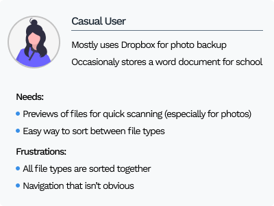
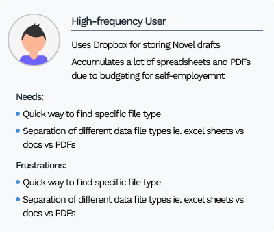

Redesign Dropbox’s dashboard to help increase the visibility of the types of files users have.
Created a dashboard that shows users the total amount of files in their account with specific separations for each file type: Documents, Spreadsheets, Images, and Media files.
User Research, UI Design
User surveys, User personas, User stories, Wireframes, High-fidelity mockup
Adobe Photoshop, Figma, Undraw.io
24 hours
Since the time to complete this challenge was limited to 24 hours, I had to do some very brief background research on how users felt about Dropbox’s current interface. Thankfully, I was able to wrangle (bribe with free snacks) two users (friends) to come hang out with me for 9 hours at a coffee shop for all of my user-testing needs.
Next I decided to do some more research into the competition in order to gain more insight into how they displayed files to users and made a list of Pros and Cons. Keeping the following questions in mind:
Clear distinctions with icons on different file types
Separates folders from files
User surveys, User personas, User stories, User flows, Wireframes, High-fidelity mockup
Clear distinctions with icons on different file types
Separates folders from files
User surveys, User personas, User stories, User flows, Wireframes, High-fidelity mockup
Clear distinctions with icons on different file types
Separates folders from files
User surveys, User personas, User stories, User flows, Wireframes, High-fidelity mockup
Based on the information gathered from the survey, I decided to create 2 personas - each representing the opposite ends of the spectrum in terms of engagement and frequency of use.
Using the information gathered from the user personas, surveys, and compettive analysis I created the user tasks needed to be able to visualize different file types on the Dropbox dashboard:
Next, I created some wireframe sketches based on the user stories and flows.
Using these sketches, I created the first digital wireframe of the new Dropbox dashboard
With the wireframe above, I asked my users to test the new Dropbox dashboard, asking them how they would theoretically complete the follwing user tasks:
The feedback I received was:
Based on the feedback I received, I created the second iteration of the new dashboard with the follwing changes:
I did some more user testing and important feedback points I received were:
Taking the second round of user testing feedback into consideration, and utilizing Dropbox’s pre-existing brandling guidelines, I created the final high-fidelity and prototype.
It was at this time that I had come to the end of the 24-hour deadline but the changes that I implemented from previous user feedback and for this mockup are:
This was a very exciting exercise in utilizing my creative problem solving and design skills to re-imagine a Dropbox dashboard that easily increases the visibility of and displays different file types.
Given more time, I would like to explore what the dashboard would look like in a list view versus the grid view I chose to work with. I would also do more user testing on the way the different sections are separated and explore alternate solutions through preference testing.